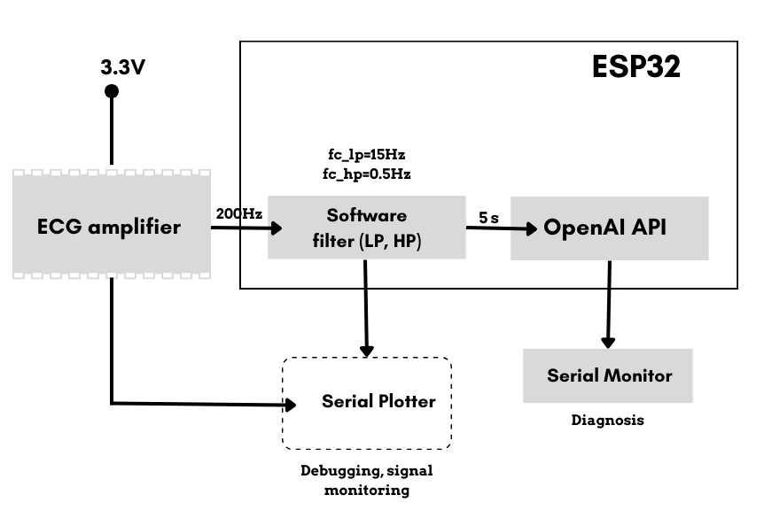
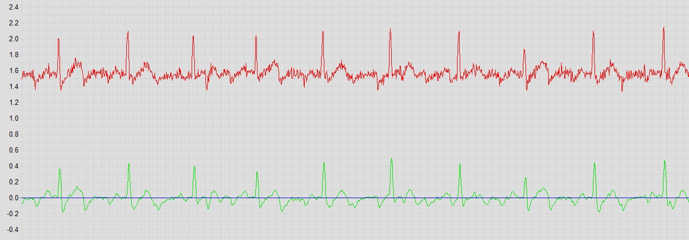

2024-now
About
I build systems that work in theory.
Then I make sure they survive reality.
My background is in electronics, but I don’t like staying in just one layer. I work across systems, from hardware to infrastructure and data. I’m especially interested in how these pieces interact in real conditions, where things are rarely perfect and systems need to be stable, predictable, and well understood. I enjoy digging into problems, understanding how something behaves under pressure, and making sure it works reliably beyond just a controlled setup.
I care about reliability, debugging, and understanding how systems behave under pressure. It’s not just about building something, but knowing exactly why it works.
Systems
I enjoy working on systems across different layers, from embedded devices to backend services, especially when they need to work reliably in real conditions.
Thinking
If something breaks, I don’t patch it. I trace it. Logs, signals, behavior… there’s always a reason. I just don’t stop until I find it.
Focus
Clean demos are nice. Systems that survive real conditions are better. That’s the kind of work I care about.
Academic Background
Academic Journey
2024 — 2025
Spec. Sci Electronics / University of Montenegro
GPA: 9.33
2020-2024
BSc Electronics, Telecommunications and Computer Science / University of Montenegro
Experience
Professional Journey
Officer in Processing Center
Crnogorska Komercijalna Banka
2025 — Present
Teaching Assistant – AIoT Academy
AIoT Academy (MANT)
2026
Selected Work
Featured Projects
Featured Project
Real-Time ECG Monitoring & AI Analysis System
Implemented a real-time ECG monitoring system based on the ESP32 microcontroller and AD8232 analog front-end, enabling accurate acquisition of low-amplitude cardiac bio-signals in non-clinical environments.
The system addresses challenges such as motion artifacts, baseline drift, and powerline interference, ensuring stable signal capture under real-world conditions.
- Developed embedded signal processing pipeline (high-pass, low-pass, notch filters)
- Achieved reliable ECG waveform extraction at 200 Hz sampling rate
- Integrated cloud-based AI analysis via OpenAI API
- Enabled real-time diagnostic feedback and remote monitoring
The solution demonstrates a scalable and low-cost approach to remote cardiac monitoring, combining embedded systems, IoT communication, and AI-driven analysis.
View on GitHub →
System Architecture

ECG Signal Output
PROJECT
Thermocouple System
Precision temperature sensing with calibration and analog conditioning.
Arduino-based thermocouple measurement system with precision analog conditioning and polynomial calibration for accurate temperature sensing in the 0–100 °C range.
View on GitHub →PROJECT
MEOWsic Feeder
ML model that detects cat meows.
Machine learning–based system for detecting and distinguishing cat meows from other environmental sounds.
View on GitHub →PROJECT
CapSense Interface
Interactive capacitive sensing system.
Interactive capacitive sensing system for real-time 3D hand position tracking and visualization.
View on GitHub →Skills
Tools & Strengths
Linux • Windows • macOS • Monitoring • Log Analysis and Troubleshooting • High Availability • Backup & Recovery • Data Center • E-commerce Integration • E-commerce debugging • Cyber-Physical Systems • Shell Scripting • Networking Fundamentals •
Python • C/C++ • MATLAB • SQL • Bash • PowerShell • Java • HTML • CSS • PHP • VHDL • Verilog
PKI • PGP • WAF • Encryption
Embedded System Programming • Microcontroller Development • ESP32 • Arduino • Processing • TensorFlow • PyTorch • Edge AI / TinyML Development • Medical Electronics • Model Quantization and Optimization • Neural Network Deployment on Embedded Devices • Real-Time Data Processing • Sensor Data Acquisition and Fusion • Model Conversion • Performance Profiling and Memory Optimization • Debugging Embedded AI Systems •
Leadership & Recognition
International Experience
FLEX Scholar (U.S. Department of State)
Selected for the highly competitive Future Leaders Exchange (FLEX) program with a 2.3% acceptance rate. Spent one academic year in the United States, ranking among the top 3% of students at Carl Junction High School, Missouri.
This experience strengthened my ability to adapt quickly to new environments, communicate across cultures, and perform under unfamiliar conditions.
International Engagement & Cultural Diplomacy
Delivered presentations about Montenegro to over 500 students in the U.S., contributing to international education and cultural exchange initiatives.
Recognized with the Certificate of Distinguished Achievement in International Understanding.
Leadership & Training
Participated in international workshops across Europe and the U.S. focused on leadership, education, media literacy, and community engagement.
Applied knowledge by mentoring peers, contributing to educational initiatives, and promoting critical thinking and collaboration.